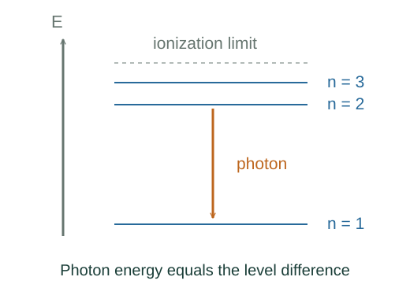

From atomic levels to spectral lines
An atom emits or absorbs light when its internal state changes. Energy conservation gives the photon frequency once the allowed atomic energies are known.
What the symbols mean
Ei, Ef: initial and final atomic energies; ni > nf: hydrogen emission levels; RH: hydrogen Rydberg constant including the appropriate mass convention.
When this applies
Single-photon hydrogen transitions, negligible atomic recoil for the simple formula, and the leading 1/n² energy-level approximation.
Developing the argument

Start with quantized energy levels
Write hydrogen levels as En = −A/n², where A is the positive ground-state binding-energy scale.
A closer lookWhere does the hydrogen energy scale come from? ↗Conserve energy in emission
The initial atom has greater energy than the final atom. Their positive difference becomes photon energy, apart from the small recoil correction.
Use the quantum light relation
Photon energy is hf = hc/λ. Dividing the level difference by hc gives the reciprocal-wavelength form.
Distinguish energy matching from transition probability
Energy conservation determines possible photon frequencies. Whether a transition is strong, weak or forbidden also depends on quantum states and interaction selection rules.
A worked example
For ni = 3 and nf = 2, the leading energy difference is about 1.89 eV, giving a visible wavelength close to 656 nm.
Derivation behind this calculation ↗A point to keep straight
The photon energy is the difference of levels, not the final binding energy alone. The simple hydrogen formula does not directly fit multielectron atoms.
Check the assumptions and derivation ↗